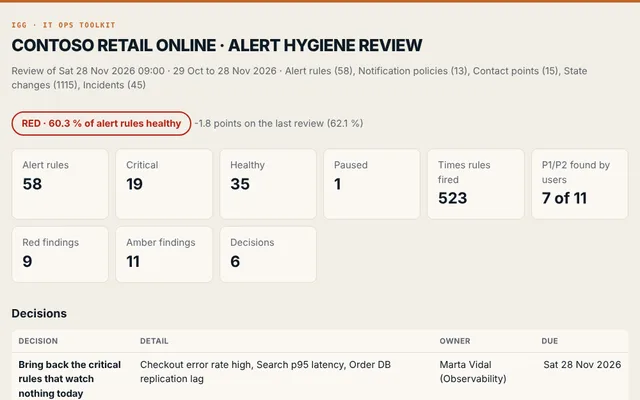
66
Herramientas de IT Ops · 28 nov 2026
La revisión, publicada con datos ficticios de una tienda online con 58 reglas de alerta, lee juntas las reglas, las políticas de notificación, un mes de cambios de estado y las incidencias P1/P2.
Leer el artículo →
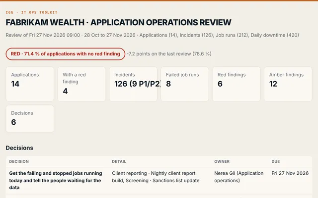
65
Herramientas de IT Ops · 27 nov 2026
La revisión, publicada con datos ficticios de una gestora de patrimonios con 14 aplicaciones de negocio, lee un mes de incidencias, ejecuciones de procesos y caídas frente a lo que cada aplicación debe dar.
Leer el artículo →
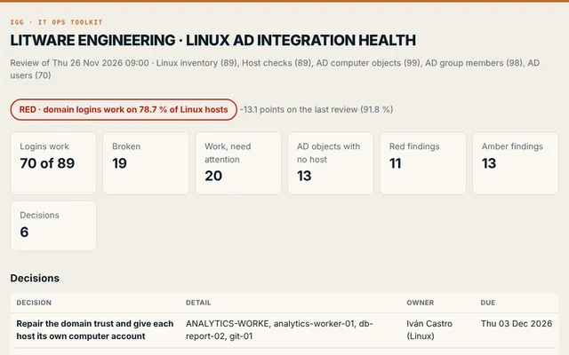
64
Herramientas de IT Ops · 26 nov 2026
La revisión, publicada con datos ficticios de una empresa de ingeniería con 89 equipos Linux, lee cada servidor, estación de trabajo y portátil desde los dos lados: lo que dice el equipo y lo que dice Active Directory.
Leer el artículo →
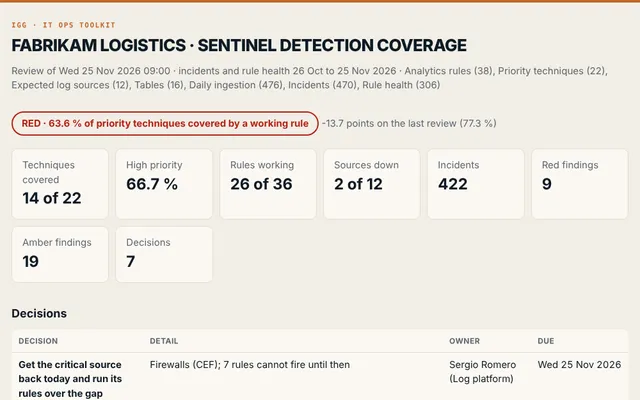
63
Herramientas de IT Ops · 25 nov 2026
La revisión, publicada con datos ficticios de una empresa de logística con 38 reglas de análisis, lee las reglas junto a las técnicas que importan, las fuentes de logs de las que dependen y un mes de incidentes.
Leer el artículo →
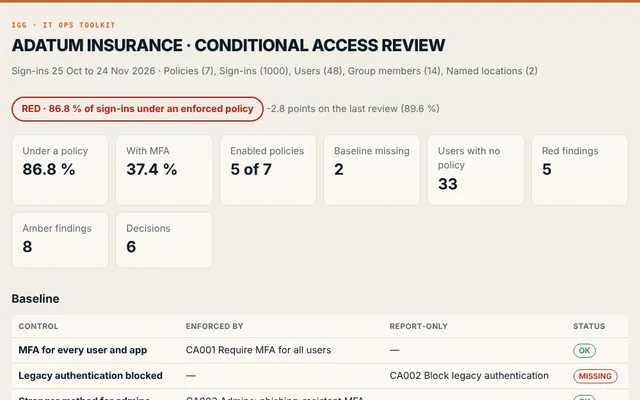
62
Herramientas de IT Ops · 24 nov 2026
La revisión, publicada con datos ficticios de una aseguradora con siete políticas, lee cada política de acceso condicional junto a un mes de inicios de sesión y saca lo que hacen de verdad.
Leer el artículo →
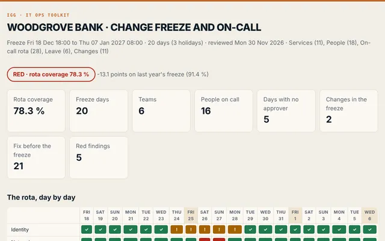
61
Herramientas de IT Ops · 23 nov 2026
La revisión, publicada con datos ficticios de un banco con seis equipos de IT, lee los servicios, las personas, sus vacaciones, la guardia y los cambios, y saca lo que hay que arreglar antes de que empiece la congelación.
Leer el artículo →
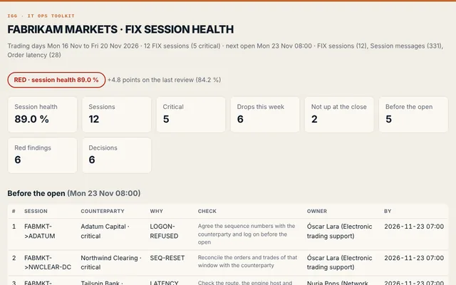
60
Herramientas de IT Ops · 21 nov 2026
La revisión, publicada con datos ficticios de un bróker con 12 sesiones FIX, lee una semana de mensajes de sesión de los logs del motor y saca las sesiones que hay que mirar antes de que abra el mercado.
Leer el artículo →
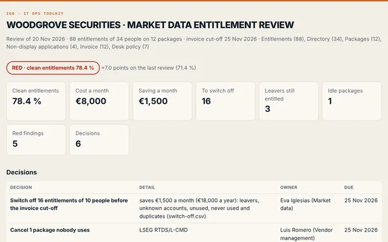
59
Herramientas de IT Ops · 20 nov 2026
La revisión, publicada con datos ficticios de un bróker con 34 personas en su sala de trading, comprueba quién ve qué datos de mercado en LSEG y Bloomberg, qué no usa nadie y si la factura cuadra, y saca lo que hay que dar de baja antes del cierre de los proveedores.
Leer el artículo →
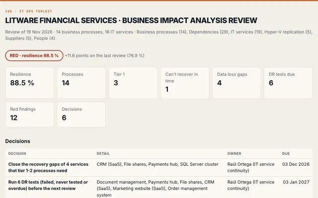
58
Herramientas de IT Ops · 19 nov 2026
La revisión, publicada con datos ficticios de una empresa de servicios financieros con 14 procesos de negocio, calcula cuánto tiempo puede parar cada proceso y cuántos datos puede perder, y comprueba si los servicios de IT, los proveedores y las personas de los que depende pueden cumplirlo.
Leer el artículo →
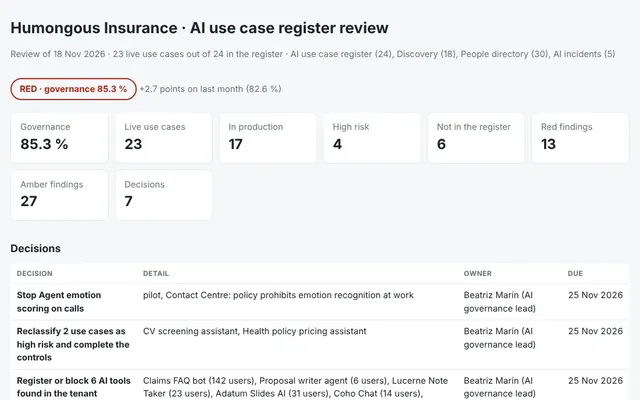
57
Herramientas de IT Ops · 18 nov 2026
La revisión mensual, publicada con datos ficticios de una aseguradora con 24 casos de uso de IA, cruza el registro con lo que el descubrimiento encuentra en el tenant, el directorio y los incidentes de IA, y comprueba cada caso de uso contra el nivel de riesgo y los controles que pide la política de IA de la empresa.
Leer el artículo →
 56
56
Herramientas de IT Ops · 17 nov 2026
La revisión mensual, publicada con datos ficticios de una empresa de logística con 115 fichas, cruza la CMDB con Active Directory, Intune, vCenter, un escaneo de red, el directorio y los tickets del mes, y da una nota de calidad a cada CI, clase y grupo de soporte.
Leer el artículo →
 55
55
Herramientas de IT Ops · 16 nov 2026
La revisión mensual, publicada con datos ficticios de una cadena con 37 impresoras, cruza el registro de equipos, los servidores de impresión, el portal del proveedor y los tickets para encontrar la causa de las averías repetidas, lo que falta por pedir y lo que sobra.
Leer el artículo →
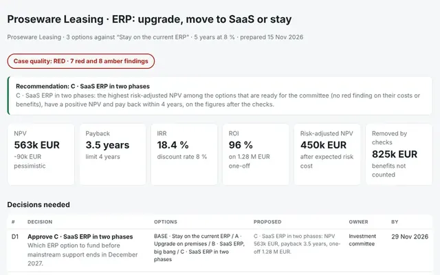
54
Herramientas de IT Ops · 15 nov 2026
El constructor de business cases, publicado con una empresa de leasing ficticia que decide qué hacer con su ERP, compara cada opción con no hacer nada, aplica las comprobaciones de un controller de finanzas antes del comité y enseña las cifras tal como se presentaron y tras la revisión.
Leer el artículo →
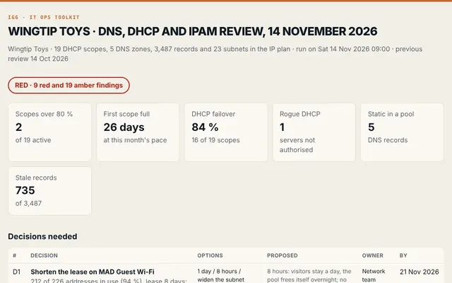
53
Herramientas de IT Ops · 14 nov 2026
La revisión mensual de DNS y DHCP, publicada con datos ficticios de una juguetera con 19 ámbitos y 3.487 registros, cruza ámbitos, concesiones, conmutación, zonas, registros y el plan de direccionamiento IP para ver qué pools se llenan antes y qué apunta aún a servidores antiguos.
Leer el artículo →
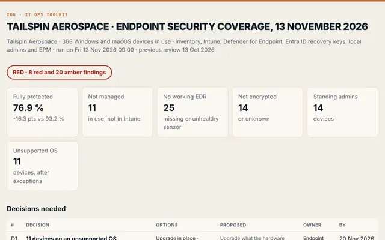
52
Herramientas de IT Ops · 13 nov 2026
La revisión mensual de los equipos, publicada con datos ficticios de un fabricante de piezas para drones y aviónica con 368 dispositivos, cruza equipo a equipo el inventario, Intune y Defender y revisa las claves de cifrado, los administradores locales, las elevaciones y los sistemas.
Leer el artículo →
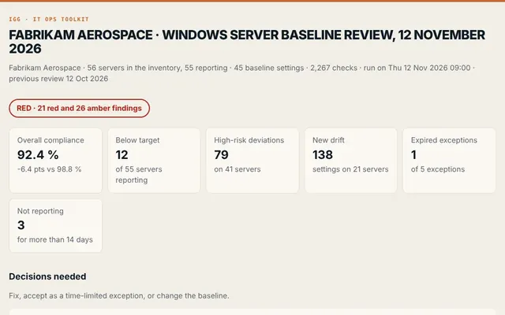
51
Herramientas de IT Ops · 12 nov 2026
La revisión mensual de la línea base, publicada con datos ficticios de un fabricante aeroespacial con 56 servidores, compara la configuración de cada servidor con la línea base de seguridad aprobada, el mes anterior, las excepciones y las directivas de grupo para explicar por qué se ha desviado.
Leer el artículo →
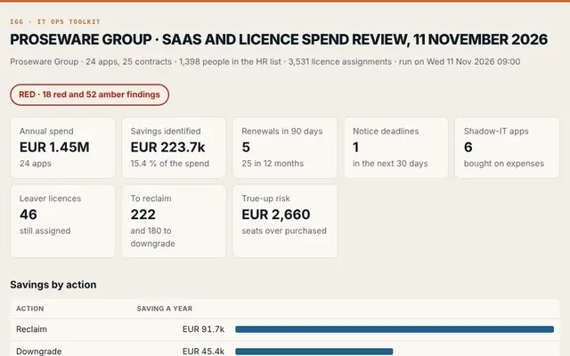
50
Herramientas de IT Ops · 11 nov 2026
La revisión mensual de SaaS y licencias, publicada con datos ficticios de una distribuidora con 1.370 empleados y 24 aplicaciones, cruza el registro de licencias, la última actividad de cada usuario, la lista de RR. HH. o de Entra ID y los gastos con tarjeta para valorar cada ahorro antes de su preaviso.
Leer el artículo →
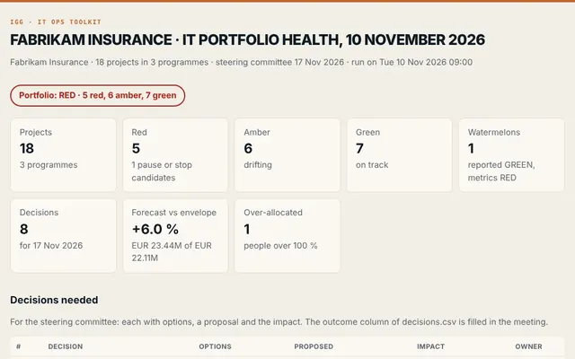
49
Herramientas de IT Ops · 10 nov 2026
La revisión de salud de la cartera, publicada con datos ficticios de una aseguradora con dieciocho proyectos, cruza la herramienta de PPM, los hitos, el registro RAID, el plan de recursos y el histórico de sprints para calcular el estado de cada proyecto y las decisiones del comité.
Leer el artículo →
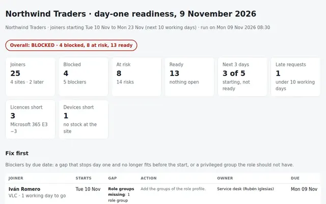
48
Herramientas de IT Ops · 9 nov 2026
El control del primer día, publicado con datos ficticios de una empresa de distribución y trading con cuatro sedes y 25 altas, cruza la lista de altas de RR. HH., los perfiles por puesto, Entra ID, los equipos, las licencias, el stock y las peticiones de acceso para decir quién lo tendrá todo funcionando el primer día.
Leer el artículo →
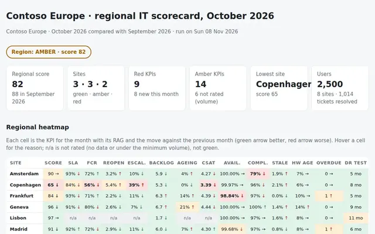
47
Herramientas de IT Ops · 8 nov 2026
El cuadro de mando mensual de IT multisede, publicado con datos ficticios de una empresa con 2.500 personas en ocho oficinas europeas, cruza tickets, caídas de la monitorización, equipos de Intune, acciones abiertas y pruebas de DR para poner a cada oficina en rojo, ámbar o verde con el motivo de cada rojo.
Leer el artículo →
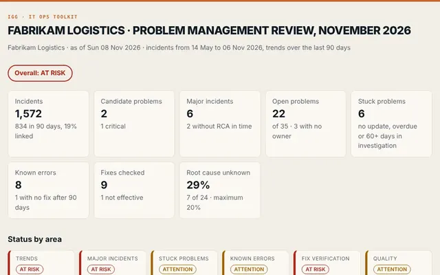
46
Herramientas de IT Ops · 8 nov 2026
La revisión mensual de gestión de problemas, publicada con datos ficticios de una empresa de logística con 1.572 incidencias en seis meses, cruza incidencias, problemas, cambios vinculados y la CMDB para encontrar repeticiones sin problema, incidentes graves sin causa raíz y soluciones que no funcionaron.
Leer el artículo →
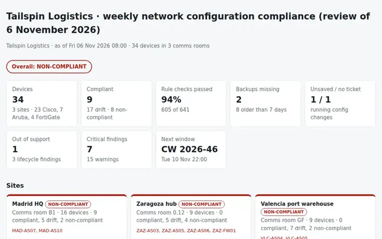
45
Herramientas de IT Ops · 6 nov 2026
La revisión semanal de cumplimiento de la red, publicada con datos ficticios de una empresa de logística con tres salas de comunicaciones y 34 equipos, cruza las copias de configuración de Cisco, Aruba y FortiGate, el inventario de Device42, una línea base y los cambios aprobados para dar un estado a cada equipo y sede.
Leer el artículo →
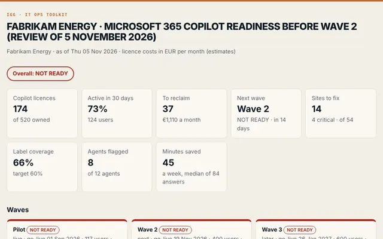
44
Herramientas de IT Ops · 5 nov 2026
La revisión de preparación para Copilot, publicada con datos ficticios de una empresa de energía con 1.800 personas en tres oleadas, cruza usuarios, uso, sitios de SharePoint, etiquetas, DLP, agentes de Copilot Studio y formación para decir qué podría mostrar Copilot que no debería y si cada oleada está lista.
Leer el artículo →
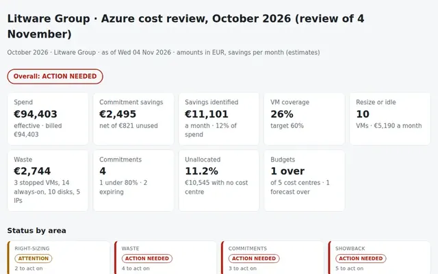
43
Herramientas de IT Ops · 4 nov 2026
La revisión mensual de costes de Azure, publicada con datos ficticios de un grupo asegurador con cinco suscripciones y 133 VMs, cruza la exportación de costes, 30 días de métricas, discos, IP públicas, compromisos y presupuestos para decidir qué redimensionar, borrar, programar y comprometer, y quién paga cada línea.
Leer el artículo →
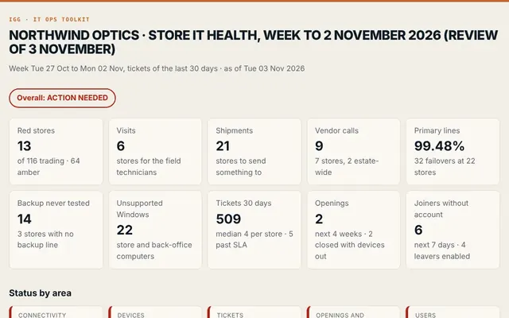
42
Herramientas de IT Ops · 3 nov 2026
La revisión semanal de tiendas, publicada con datos ficticios de una cadena de ópticas con 122 tiendas, cruza la conectividad, los equipos, las impresoras, los tickets, las aperturas y las altas y bajas para dar a cada una un estado rojo, ámbar o verde y una lista de visitas, envíos y llamadas.
Leer el artículo →
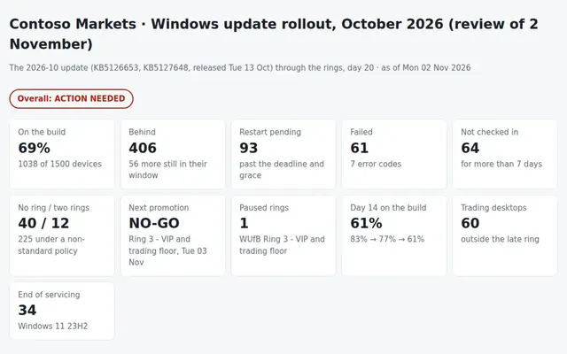
41
Herramientas de IT Ops · 2 nov 2026
La revisión de anillos, publicada con datos ficticios de una empresa con 1.500 equipos con Windows 11, sigue la actualización de cada mes por los anillos de Intune y Configuration Manager frente a sus plazos y puertas, y muestra los equipos con retraso y por qué, los fallos por modelo y la tendencia.
Leer el artículo →
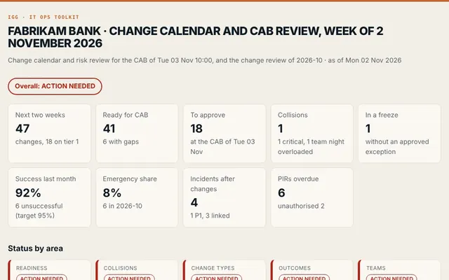
40
Herramientas de IT Ops · 2 nov 2026
La revisión semanal de cambios, publicada con datos ficticios de un banco con sala de trading, cruza las peticiones de cambio con el mapa de servicios, las congelaciones, los incidentes y las aprobaciones para mostrar qué no está listo para el CAB, qué coincide y cómo fueron los cambios del mes pasado.
Leer el artículo →
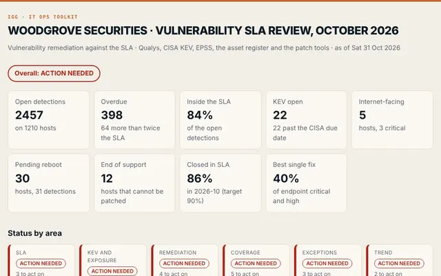
39
Herramientas de IT Ops · 31 oct 2026
La revisión de vulnerabilidades, publicada con datos ficticios de un bróker con unos 400 servidores y 1.200 equipos, mide cada detección abierta de Qualys frente a su plazo y la cruza con el catálogo KEV de CISA, EPSS, el inventario, el parcheo y las excepciones para mostrar qué va tarde y por qué.
Leer el artículo →
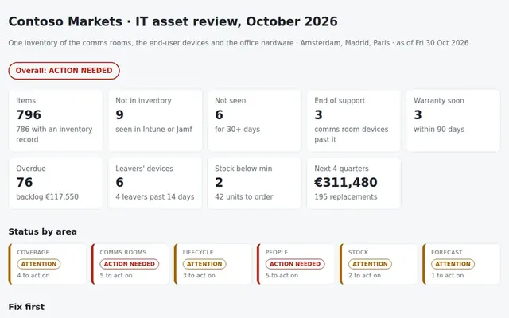
38
Herramientas de IT Ops · 30 oct 2026
La revisión mensual de equipos, publicada con datos ficticios de un bróker con tres oficinas, cruza por número de serie Device42, Intune, Jamf Pro, las compras, el registro de la oficina, RR. HH. y el almacén para encontrar equipos sin registrar, portátiles de bajas y las renovaciones de cada trimestre.
Leer el artículo →
SDSimulador de soporte IT
Simulador de soporte IT · 29 oct 2026
Una mesa de soporte en el navegador: cola de tickets con SLA, el solicitante y su equipo, una consola donde los comandos hacen algo, un Active Directory simulado, un escritorio para arreglar en la máquina del usuario, una sala de red con la CLI de switches y cortafuegos, envíos y RMA, 24 tickets de primer y segundo nivel, un arreglo tentador que no resuelve la causa y una nota de trabajo que se corrige. Gratis, en español e inglés.
Leer el artículo →
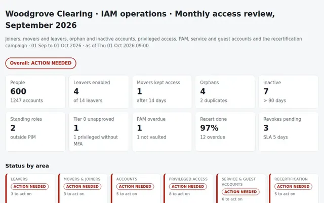
37
Herramientas de IT Ops · 29 oct 2026
La revisión mensual de accesos, publicada con datos ficticios de una cámara de compensación de 600 personas, cruza la plantilla de RR. HH. con Active Directory, Entra ID, la bóveda PAM y la recertificación para encontrar bajas habilitadas, cambios de puesto con acceso antiguo y aprobaciones que nadie revisó.
Leer el artículo →
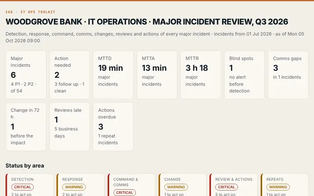
36
Herramientas de IT Ops · 28 oct 2026
El kit, publicado con datos ficticios del equipo de operaciones IT de un banco durante un trimestre, mide cada P1 y P2 desde la primera señal hasta la resolución, revisa las comunicaciones y los cambios previos, y redacta un borrador de revisión post-incidente con su línea de tiempo.
Leer el artículo →
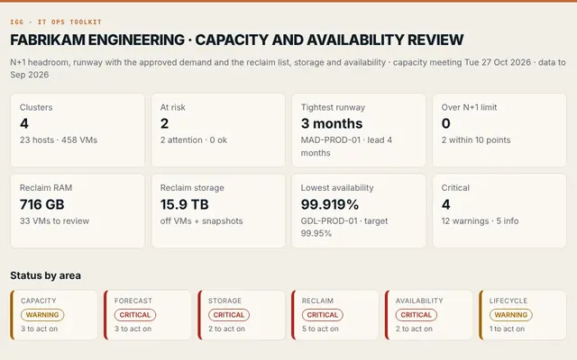
35
Herramientas de IT Ops · 27 oct 2026
La revisión mensual de capacidad, publicada con datos ficticios de la nube privada de una empresa de ingeniería, convierte el uso de vSphere y Nutanix, los proyectos aprobados y la lista de recuperación en el mes en que cada clúster se queda sin margen y la fecha para pedir hosts.
Leer el artículo →
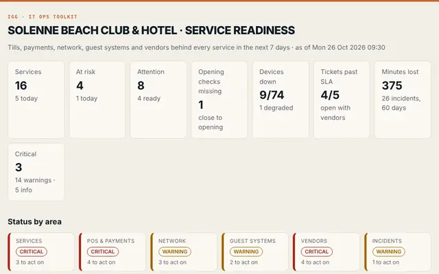
34
Herramientas de IT Ops · 26 oct 2026
La revisión de cada mañana, publicada con datos ficticios de un beach club con hotel boutique, junta el TPV, la red, los cajones de efectivo, el PMS y los portales de los proveedores para dar un veredicto a cada servicio de la próxima semana.
Leer el artículo →
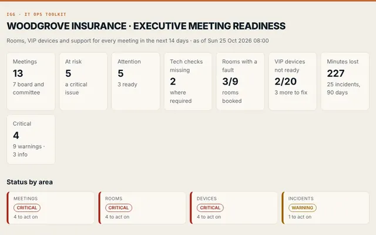
33
Herramientas de IT Ops · 25 oct 2026
La revisión de preparación, publicada con datos ficticios de una aseguradora con once salas, junta la salud de Teams Rooms, la gestión de dispositivos, los calendarios de las salas y la herramienta de soporte para dar un veredicto a cada consejo y comité de las próximas dos semanas.
Leer el artículo →
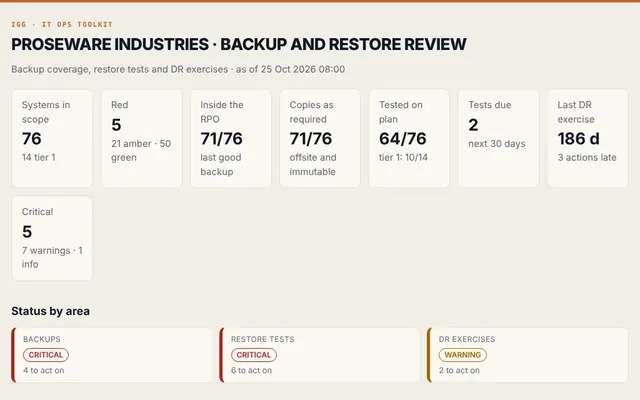
32
Herramientas de IT Ops · 25 oct 2026
La revisión mensual, publicada con datos ficticios de un fabricante con 76 sistemas, cruza los trabajos de backup, las copias offsite, las pruebas de restauración y los ejercicios de DR para mostrar qué sistemas han demostrado que se pueden recuperar, y con qué evidencia.
Leer el artículo →
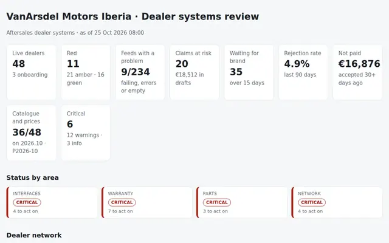
31
Herramientas de IT Ops · 25 oct 2026
La revisión semanal, publicada con datos ficticios de un importador con 53 concesionarios en España y Portugal, pone juntos por concesionario los feeds del DMS, las garantías, los catálogos de recambios y las tarifas, en rojo, ámbar o verde.
Leer el artículo →
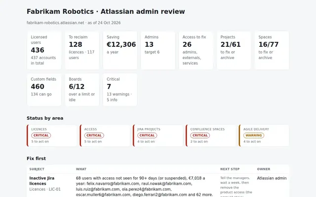
30
Herramientas de IT Ops · 24 oct 2026
Una revisión mensual de administración, publicada con una empresa inventada de robótica de almacenes en Atlassian Cloud, encuentra licencias a recuperar, administradores que sobran, restos que limpiar y la salud ágil de cada tablero Scrum, con un sprint nueve días tarde.
Leer el artículo →
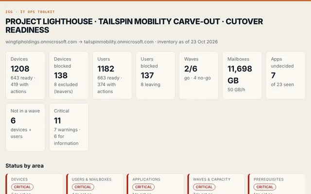
29
Herramientas de IT Ops · 23 oct 2026
Un planificador de preparación para separar un tenant de Microsoft 365, publicado con una segregación inventada de 1.208 equipos y 1.182 usuarios, lee las exportaciones del propio tenant origen y da a cada ola un go o no-go con su motivo.
Leer el artículo →
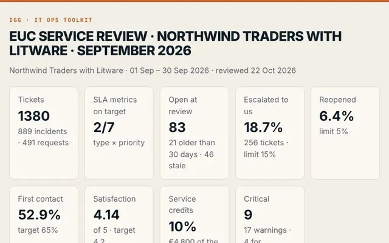
28
Herramientas de IT Ops · 22 oct 2026
Una revisión mensual del servicio, publicada con 1.454 tickets ficticios de una empresa de trading inventada y su proveedor ficticio, recalcula los SLA desde los tickets en bruto, suma las OLAs de los equipos internos y calcula los créditos que nadie reclamó.
Leer el artículo →
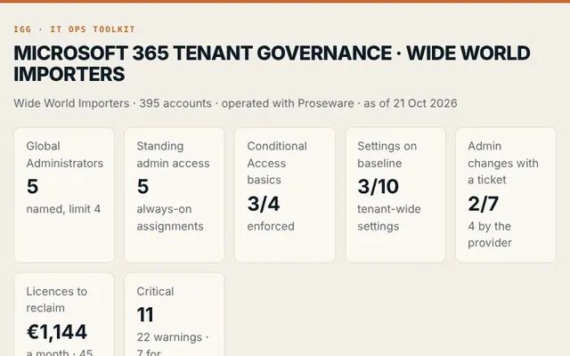
27
Herramientas de IT Ops · 21 oct 2026
Una revisión mensual, publicada con un comercio inventado de 395 cuentas que opera un proveedor ficticio, comprueba roles de administración, cuentas de emergencia, Acceso condicional, desviaciones y licencias, y cruza los cambios con sus tickets.
Leer el artículo →
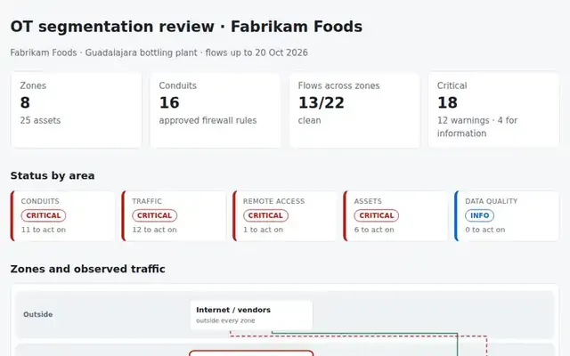
26
Herramientas de IT Ops · 20 oct 2026
Un laboratorio sobre una planta embotelladora inventada pone juntos zonas, activos, reglas de firewall y una semana de tráfico frente al modelo Purdue e IEC 62443, y propone reglas más ajustadas a lo que la planta usa de verdad.
Leer el artículo →
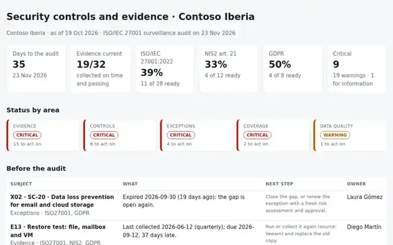
25
Herramientas de IT Ops · 19 oct 2026
Un registro, publicado con una empresa inventada a cinco semanas de una auditoría ISO 27001, mapea 23 controles a tres marcos y encuentra evidencias que faltan, llegan tarde o fallan, y excepciones caducadas.
Leer el artículo →
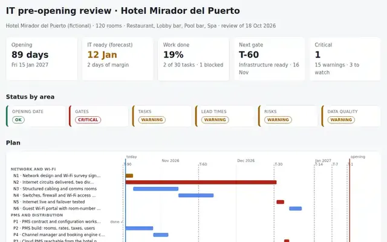
24
Herramientas de IT Ops · 18 oct 2026
El tracker, publicado con un hotel vacacional inventado de 120 habitaciones que abre en enero, con 30 tareas y retrasos puestos a propósito, calcula el camino crítico, los hitos en riesgo y lo que tiene que empezar esta semana.
Leer el artículo →
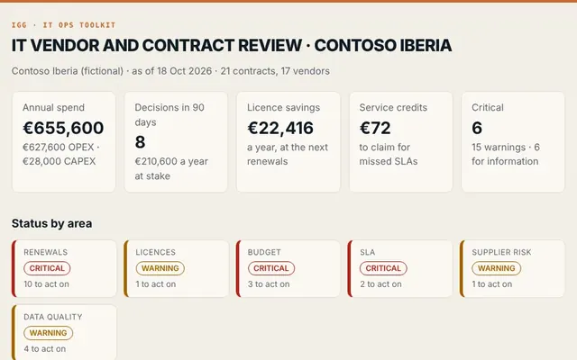
23
Herramientas de IT Ops · 18 oct 2026
El tracker, publicado con una empresa inventada de 21 contratos de 17 proveedores y fallos puestos a propósito, lee el registro de contratos para encontrar preavisos, licencias sin usar, desviaciones de presupuesto y SLA incumplidos antes de que cuesten dinero.
Leer el artículo →
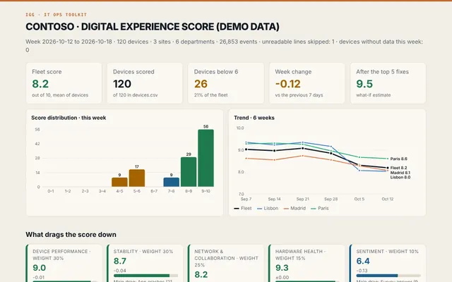
22
Herramientas de IT Ops · 17 oct 2026
Un laboratorio, con una empresa inventada de 120 equipos en tres ciudades y seis semanas de datos, que convierte la telemetría de los equipos en una nota por dispositivo, sede y departamento y ordena los arreglos que más la subirían.
Leer el artículo →
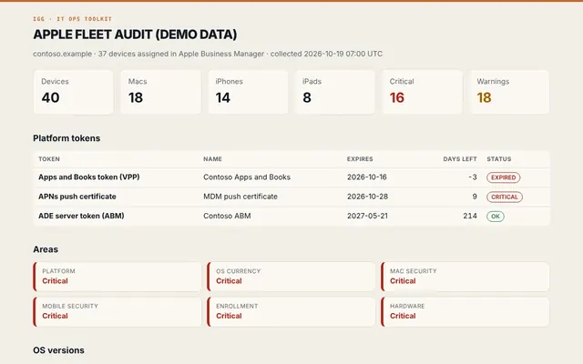
21
Herramientas de IT Ops · 17 oct 2026
La revisión, publicada con una flota inventada de 40 Mac, iPhone e iPad con tres usuarios VIP y fallos puestos a propósito, comprueba tokens, versiones, cifrado, códigos, equipos sin conectar y discos llenos, con los de dirección primero.
Leer el artículo →
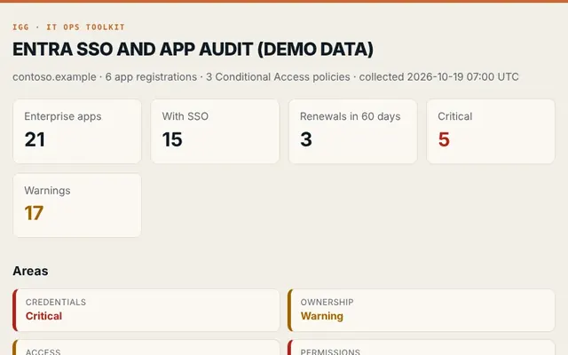
20
Herramientas de IT Ops · 16 oct 2026
La auditoría, publicada con un tenant inventado de 21 aplicaciones empresariales y fallos puestos a propósito, revisa certificados y secretos, propietarios, cobertura de MFA, permisos de riesgo y aprovisionamiento SCIM desde una exportación de solo lectura.
Leer el artículo →
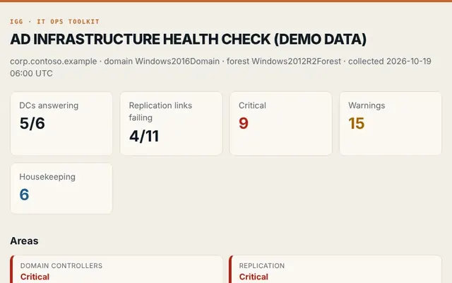
19
Herramientas de IT Ops · 16 oct 2026
El chequeo semanal, publicado con un dominio inventado de seis controladores en cuatro sedes y fallos puestos a propósito, revisa controladores, replicación, DHCP, directivas de grupo y cuentas de administrador desde una exportación de solo lectura.
Leer el artículo →
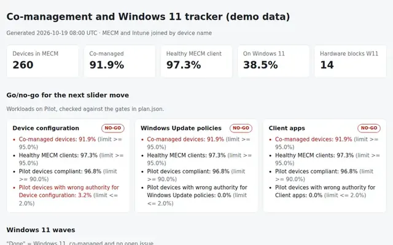
18
Herramientas de IT Ops · 15 oct 2026
El seguimiento, publicado con una empresa inventada con 260 equipos a mitad de una migración a Windows 11, cruza MECM e Intune para mostrar el estado real de co-management, la autoridad por workload frente al plan y el avance por ola.
Leer el artículo →
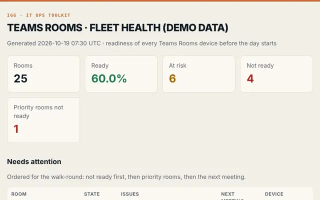
17
Herramientas de IT Ops · 15 oct 2026
La herramienta, publicada con una empresa inventada con 25 dispositivos en tres oficinas, cruza la salud de Teams Rooms desde Microsoft Graph, un registro de salas y las reservas del día en la lista de la ronda de primera hora.
Leer el artículo →
16Laboratorio GPU
Laboratorio GPU · 9 oct 2026
Un laboratorio que actualiza el software de GPU de una flota de clústeres desde Git con Flux, en olas de staging a producción y con una puerta antes de prod, probado en dos clústeres kind.
Leer el artículo →
15Laboratorio GPU
Laboratorio GPU · 5 oct 2026
Un laboratorio que escribe en un fichero TOML quién tiene qué GPU, lo traduce a los dos planificadores y prueba el préstamo, la recuperación y el uso compartido en un clúster kind con GPU simuladas.
Leer el artículo →
14Laboratorio GPU
Laboratorio GPU · 4 oct 2026
Un laboratorio que monta un clúster Slurm 23.11 real en Docker Compose con GPU simuladas, donde un chequeo de salud drena los nodos con fallos, reencola sus trabajos y los valida antes de que vuelvan.
Leer el artículo →
13Laboratorio GPU
Laboratorio GPU · 4 oct 2026
Un laboratorio que lleva un clúster de GPU nuevo de la entrega a la firma: inventario, diagnósticos, pruebas NCCL y un burn-in de 72 horas, ejecutado sobre un clúster ficticio y con un informe que el cliente puede firmar.
Leer el artículo →
12Laboratorio GPU
Laboratorio GPU · 2 oct 2026
Un laboratorio simula un entrenamiento de 1.024 GPU con fallos para medir cuánto valen los checkpoints, los nodos de repuesto y la detección rápida, y reparte cada GPU-hora según adónde va.
Leer el artículo →
11Laboratorio GPU
Laboratorio GPU · 2 oct 2026
Un laboratorio con un controlador en Go que actualiza el driver de GPU de la flota por lotes, con canary, aprobación humana y presupuesto de fallos, y vuelve atrás o aísla el nodo cuando algo falla.
Leer el artículo →
10Laboratorio GPU
Laboratorio GPU · 1 oct 2026
Un laboratorio sobre una flota simulada de 4 nodos con 8 GPU cada uno convierte las métricas DCGM en recording rules, alertas con runbook, rutas de Alertmanager y un dashboard de Grafana, y pasó 32 comprobaciones a la primera.
Leer el artículo →
09Laboratorio GPU
Laboratorio GPU · 1 oct 2026
Primero de una serie de laboratorios de GPU, con GPU simuladas: un controlador de Kubernetes lee los errores XID, el ECC y la temperatura y lleva cada nodo por una máquina de estados, del drenado a la reparación, la validación o la cuarentena.
Leer el artículo →
08Laboratorio cloud y SRE
Laboratorio cloud y SRE · 1 oct 2026
Un laboratorio en Python sin dependencias lanza sondas DNS, TLS, HTTP y TCP, sigue un SLO con presupuesto de error y avisa por burn rate; incluye un postmortem ficticio de un registro DNS perdido en una migración de zona.
Leer el artículo →
07Laboratorio cloud y SRE
Laboratorio cloud y SRE · 1 oct 2026
Un laboratorio, probado sin cuenta de AWS, monta el acceso privado a un servicio con PrivateLink, DNS privado y endpoints de SSM en cinco módulos de Terraform, y los pasa por comprobaciones de formato, validación, tests y seguridad.
Leer el artículo →
06Laboratorio cloud y SRE
Laboratorio cloud y SRE · 1 oct 2026
El laboratorio monta Cilium, Envoy Gateway, cert-manager y external-dns sobre kind para mostrar cómo entra hoy el tráfico en un clúster, y GitHub Actions lo reconstruye y prueba en cada ejecución.
Leer el artículo →
05Herramientas de IT Ops
Herramientas de IT Ops · 30 sept 2026
La app en Flask, hecha desde cero y anonimizada, cubre activos, garantías, checklists de salas, altas y bajas, turnos y salud de servicios, con acceso por invitación y TOTP.
Leer el artículo →
04Herramientas de IT Ops
Herramientas de IT Ops · 30 sept 2026
El informe lee una exportación de tickets tipo ServiceNow y genera cada mes las mismas cifras: SLA por prioridad y por equipo, tiempo de resolución, tendencia semanal e incumplimientos.
Leer el artículo →
03Herramientas de IT Ops
Herramientas de IT Ops · 30 sept 2026
La auditoría lee los usuarios, su actividad de inicio de sesión y el registro de MFA por Microsoft Graph con permisos de solo lectura, y señala cuatro tipos de deuda de identidad.
Leer el artículo →
02Herramientas de IT Ops
Herramientas de IT Ops · 30 sept 2026
PowerShell exporta los dispositivos gestionados de Microsoft Graph con acceso de solo lectura y Python genera el informe; el repo trae una flota ficticia para funcionar sin tenant.
Leer el artículo →
01Herramientas de IT Ops
Herramientas de IT Ops · 3 sept 2026
El panel en Streamlit, publicado con datos de facturación ficticios, reúne el gasto de AWS y Azure en una vista, compara cada semana con la anterior y señala la que no cuadra.
Leer el artículo →